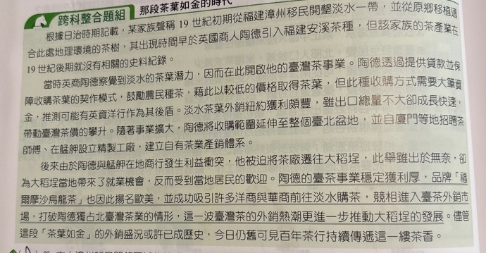
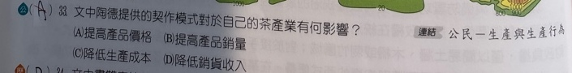

分享原卷｜p44-q33
完整原題
作答所需文章／材料
根據日治時期記載，某家族聲稱19世紀初期從福建漳州移民開墾淡水一帶，並從原鄉移植適合此處地理環境的茶樹，其出現時間早於英國商人陶德引入福建安溪茶種，但該家族的茶產業在19世紀後期就沒有相關的史料紀錄。 當時英商陶德察覺到淡水的茶業潛力，因而在此開啟他的臺灣茶事業。陶德透過提供貸款並保障收購茶葉的契作模式，鼓勵農民種茶，藉此以較低的價格取得茶葉，但此種收購方式需要大筆資金，推測可能有英資洋行作為其後盾。淡水茶葉外銷紐約獲利頗豐，雖出口總量不大卻成長快速，帶動臺灣茶價的攀升。隨著事業擴大，陶德將收購範圍延伸至整個臺北盆地，並自廈門等地招聘茶師傅，在艋舺設立精製工廠，建立自有茶業產銷體系。 後來由於陶德與艋舺在地商行發生利益衝突，他被迫將茶廠遷往大稻埕，此舉雖出於無奈，卻為大稻埕當地帶來了就業機會，反而受到當地居民的歡迎。陶德的臺茶事業穩定獲利厚，品牌「福爾摩沙烏龍茶」也因此揚名歐美，並成功吸引許多洋商與華商前往淡水購茶，競相進入臺茶外銷市場，打破陶德獨占北臺灣茶業的情形，這一波臺灣茶的外銷熱潮更進一步推動大稻埕的發展。儘管這段「茶葉如金」的外銷盛況或許已成歷史，今日仍舊可見百年茶行持續傳遞這一縷茶香。文中陶德提供的契作模式對於自己的茶產業有何影響？
(A) 提高產品價格
(B) 提高產品銷量
(C) 降低生產成本
(D) 降低銷售收入
先想一想，再查看答案、解說與原圖
原卷作答：A，原卷紅筆訂正C
正確答案：C。原文明說「藉此以較低的價格取得茶葉」，可降低茶葉原料的取得成本，最符合C。
逐項解析
| 選項與原句 | 判讀 | 句意與判斷理由 |
|---|---|---|
| (A) 提高產品價格 | 不選 | 文中雖提茶價攀升，但契作句明示陶德以較低價格取得茶葉，不能把整體茶價上升當作這個模式對自己的直接作用。 |
| (B) 提高產品銷量 | 不選 | 後文有外銷成長，但本題問提供貸款及保障收購的契作模式，最直接的效益是較低成本取得原料。 |
| (C) 降低生產成本 | 應選 | 原文明說「藉此以較低的價格取得茶葉」，可降低茶葉原料的取得成本，最符合C。 |
| (D) 降低銷售收入 | 不選 | 較低價格取得原料不等於銷售收入下降；文中也沒有將這種契作模式說成降低收入。 |
詳細說明與解題步驟
從題幹的「契作模式」回找原文對應句：提供貸款與保障收購→鼓勵種茶→以較低價格取得茶葉。C的成本在此指企業取得茶葉等生產投入的成本，不是只指工人工資，也不是把外銷總量的變化直接當成契作效果。
【A】文中雖提茶價攀升，但契作句明示陶德以較低價格取得茶葉，不能把整體茶價上升當作這個模式對自己的直接作用。
【B】後文有外銷成長，但本題問提供貸款及保障收購的契作模式，最直接的效益是較低成本取得原料。
【C】原文明說「藉此以較低的價格取得茶葉」，可降低茶葉原料的取得成本，最符合C。
【D】較低價格取得原料不等於銷售收入下降；文中也沒有將這種契作模式說成降低收入。
核對註記：已實看原卷，核對完整題幹、全部選項與必要材料；康軒課次缺獨立章節證據，歸綜合，不採來源AI三版本頁碼。
原圖（僅本題）

